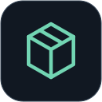

El dueño prepara la lista
Escanea lo que sale de la bodega y registra las cantidades en su celular.

Android
Tenkai Inventory
Lleva tu catálogo en el celular. Cuenta y prepara la mercancía en la bodega, aunque no haya señal. Al llegar a la tienda, conecta con POS, revisa el lote y confirma la entrada sin volver a capturar cada artículo.
Se instala y vincula con una edición compatible de POS. Consulta disponibilidad del paquete y sus funciones antes de contratar.

Hecho para resolver tu trabajo
Escanea lo que sale de la bodega y registra las cantidades en su celular.
La lista se envía a POS; el personal revisa la entrega y acomoda la mercancía.
Descarga el catálogo antes del recorrido y guarda los lotes para enviarlos después.
Usa perfiles separados para que catálogo, conexión, lotes e historial correspondan a la tienda correcta.
La aplicación en detalle
Funciones según los módulos, permisos y versiones compatibles de tu instalación.
Recepción de productos, cantidades y costos. Puedes corregir el lote antes de enviarlo.
Productos guardados en el teléfono para reconocer códigos lejos de la red de la tienda.
Pon un nombre al surtido, guárdalo y envíalo cuando vuelvas a conectar.
Cuenta productos, revisa diferencias y aplica los ajustes con el permiso correspondiente.
Captura el conteo que el dueño solicita para el cambio de turno.
Registro y seguimiento de productos dañados y cambios con proveedores en una instalación compatible.
Consulta de solo lectura del turno en curso, con selección de caja cuando hay varias.
Revisa recepciones y auditorías aplicadas desde el teléfono y genera comprobantes en PDF.
Dentro de Tenkai Inventory
Ampliar pantallaAcceso a mercancías, catálogo offline, conteos, auditoría e historial.
 Ampliar pantalla
Ampliar pantallaProductos y cantidades reunidos en un lote antes de enviarlo.
 Ampliar pantalla
Ampliar pantallaExplicaciones de las tareas disponibles dentro de la aplicación.
Pantallas de las aplicaciones con datos de demostración. La apariencia y las opciones pueden variar según versión, edición y permisos.
Antes de comenzar
Celular Android, POS compatible, acceso autorizado y módulos de inventario móvil y almacén offline para las tareas que los requieren. Para enviar el lote, el celular debe llegar a la red de la tienda y POS debe estar abierto.
Del surtido a la recepción
El dueño cuenta y selecciona en bodega. El encargado revisa lo que recibió y confirma el lote en POS. Cada persona conserva su parte del control sin repetir la captura.
Ver el recorrido completoEmpecemos por tu negocio
Cuéntanos cómo trabajas. Te ayudamos a elegir las aplicaciones y módulos que necesitas.